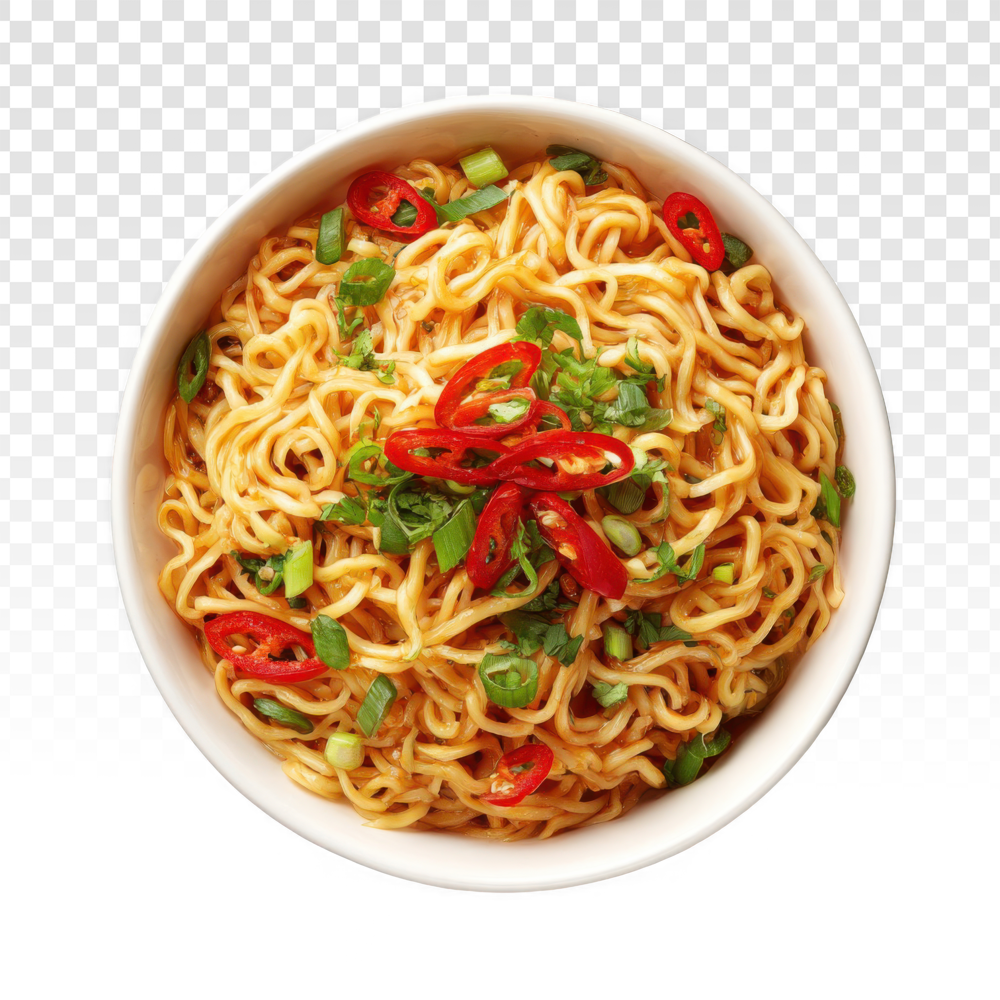

Easy Egg Noodles

Description
These egg noodles are the old-fashioned type, just like Grammy used to make! Try them next time you prepare your favorite soup or stew. Don't forget that fresh pasta cooks much quicker than dried! You may use a dough hook attachment on your electric mixer or your hands to knead the pasta dough.
Ingredients
- 2 ½ cups all-purpose flour
- 1 pinch salt
- 2 large eggs, beaten
- ½ cup milk
- 1 tablespoon butter
Directions
- Step 1:Gather all ingredients.
- Step 2:Stir flour and salt together in a large bowl. Add eggs, milk, and butter.
- Step 3:Knead dough until smooth, about 5 minutes. Let rest in a covered bowl for 10 minutes.
- Step 4:On a floured surface, roll dough out to a thickness of 1/8 to 1/4 inch. Cut into desired lengths and shapes.
- Step 5:Allow to air-dry before cooking, 10 to 15 minutes.
- Step 6:Cook noodles in a large pot of salted boiling water until al dente, about 5 minutes.
- Step 7:Serve and enjoy!
Home